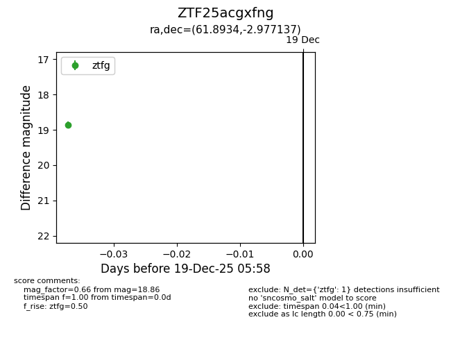
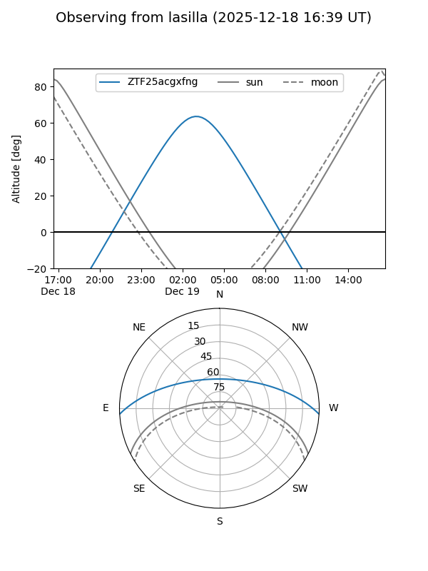
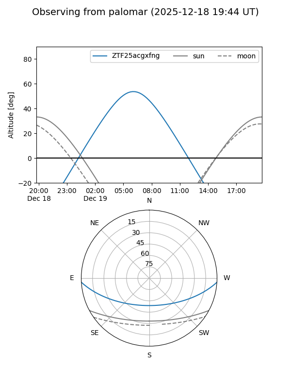

ZTF25acgxfng
Target ZTF25acgxfng at 2025-12-19 05:59
Aliases and brokers:
FINK: fink-portal.org/ZTF25acgxfng
Lasair: lasair-ztf.lsst.ac.uk/objects/ZTF25acgxfng
ALeRCE: alerce.online/object/ZTF25acgxfng
alt names
ZTF25acgxfng (ztf,fink_ztf)
Coordinates:
equatorial (ra, dec) = 61.8934,-2.97714
equatorial (HMS+DMS) = 04:07:34.41,-02:58:37.69
galactic (l, b) = (194.4312,-37.32838)
Flags:
Photometry:
last ztfg=18.86
1 ztfg detections
Lightcurve

Visibility


Additional plots